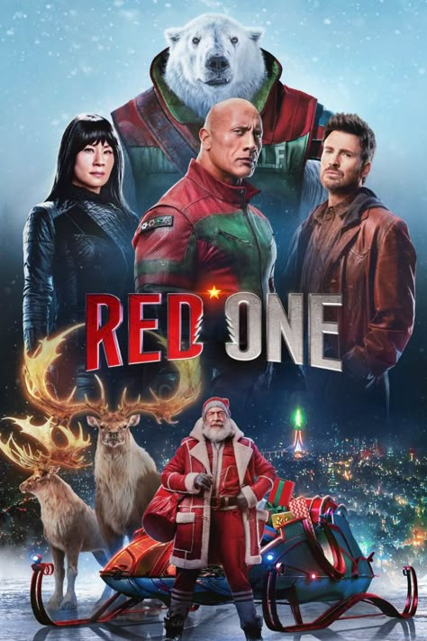
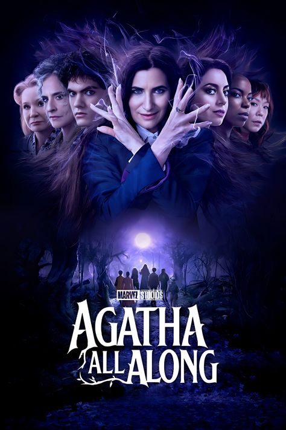
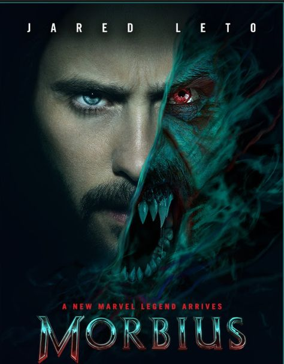

List Film
| Judul | Author | Deskripsi | Kategori | Poster | Aksi |
|---|---|---|---|---|---|
| SONIC THE HEDGEHOG 3 (2024) | Jeff Fowler | Sonic, Tails, dan Knuckles bersatu kembali untuk menghadapi musuh misterius bernama Shadow, yang memiliki kekuatan luar biasa dan motif balas dendam. Shadow, seekor landak alien, dibebaskan dari fasilitas penelitian G.U.N. dan berusaha menghancurkan markas besar G.U.N. di London sebagai pembalasan atas kematian temannya, Maria. Tim Sonic harus bekerja sama untuk menghentikan rencana destruktif ini dan menyelamatkan dunia dari kehancuran. | movies | Edit | Hapus | |
| KRAVEN THE HUNTER (2024) | Richard Wenk | Dalam perjalanannya, Sergei menghadapi berbagai konflik internal dan eksternal, termasuk perseteruan dengan saudaranya, Dmitri (alias Chameleon), dan rivalitas dengan Aleksei Sytsevich (alias Rhino). Film ini mengeksplorasi transformasi Sergei dari seorang anak yang tertekan menjadi pemburu yang menargetkan penjahat, dengan tujuan membuktikan dirinya sebagai pemburu terhebat di dunia. | movies |  |
Edit | Hapus |
| MUFASA: THE LION KING (2024) | Barry Jenkins | Mufasa, yang terlahir sebagai seekor anak singa biasa tanpa status kerajaan, mengalami berbagai rintangan dalam hidupnya. Ia bukan bagian dari keluarga bangsawan, tetapi melalui keberanian, kebijaksanaan, dan tekadnya, ia berhasil membuktikan bahwa kepemimpinan sejati bukan hanya berasal dari garis keturunan, melainkan dari hati dan tindakan seseorang. | movies |  |
Edit | Hapus |
| WICKED (2024) | Jon M. Chu | Berlatar di dunia sihir Oz, kisah ini mengikuti Elphaba, seorang gadis berbakat yang lahir dengan kulit hijau karena sebuah kutukan. Meskipun cerdas dan penuh kasih sayang, ia sering dikucilkan oleh masyarakat. Ketika ia masuk ke Shiz University, ia bertemu dengan Glinda, seorang gadis populer dan penuh pesona. Meskipun awalnya bertolak belakang, keduanya menjalin persahabatan yang erat. | movies |  |
Edit | Hapus |
| GLADIATOR II (2024) | Ridley Scott | Lucius, yang telah lama hidup jauh dari politik Romawi, dipaksa kembali ke medan pertempuran sebagai seorang gladiator. Dengan kekuatan baru yang mengancam stabilitas Roma, ia harus bertarung bukan hanya demi kelangsungan hidupnya sendiri tetapi juga demi nasib rakyatnya. | movies | Edit | Hapus | |
| WEREWOLVES (2024) | Steven C. Miller | Setahun setelah peristiwa supermoon yang menyebabkan hampir satu miliar orang berubah menjadi manusia serigala, dunia kini menghadapi ancaman serupa dengan kembalinya fenomena tersebut. Wesley Marshall, seorang mantan tentara dan ilmuwan, berusaha melindungi keluarganya dari ancaman transformasi dengan mencari cara untuk mencegah perubahan tersebut. Sementara itu, ketegangan meningkat dengan tetangganya, Cody Walker, yang memiliki pendekatan berbeda dalam menghadapi krisis ini. | movies |  |
Edit | Hapus |
| NOSFERATU (2024) | Robert Eggers | Berlatar di Jerman pada abad ke-19, Nosferatu mengisahkan seorang wanita muda bernama Ellen Hutter (Lily-Rose Depp), yang menjadi sasaran obsesif seorang vampir kuno dan mengerikan, Count Orlok (Bill Skarsgård). Sang vampir membawa kengerian ke kota kecil mereka, menyebabkan wabah penyakit dan membangkitkan ketakutan yang mendalam di antara penduduk. | movies | Edit | Hapus | |
| RED ONE (2024) | Jake Kasdan | Pada Malam Natal, Santa Claus diculik oleh penyihir musim dingin bernama Grýla. Callum Drift, yang berencana pensiun setelah satu tugas terakhir, bekerja sama dengan Jack O'Malley untuk menyelamatkan Santa dan mencegah rencana jahat Grýla yang ingin memenjarakan semua orang yang pernah masuk dalam Daftar Nakal Santa. Dalam petualangan ini, mereka menghadapi berbagai rintangan, termasuk pasukan manusia salju dan makhluk mitologis lainnya, sambil berusaha memulihkan semangat Natal dan menyelamatkan dunia dari ancaman Grýla. | movies |  | Edit | Hapus |
| VENOM: THE LAST DANCE (2024) | Kelly Marcel | Setelah peristiwa di film sebelumnya, Eddie Brock dan symbiote Venom menghadapi ancaman baru dari dewa symbiote bernama Knull. Knull mengirim makhluk asing yang dikenal sebagai Xenophage untuk memburu dan menghancurkan Venom. Sementara itu, pemerintah dan militer juga memburu Eddie dan Venom, memaksa mereka untuk terus bergerak dan mencari cara untuk menghentikan ancaman yang semakin mendekat. | movies |  |
Edit | Hapus |
| DESPICABLE ME 4 (2024) | Chris Renaud | Gru menghadiri reuni di sekolah lamanya, Lycée Pas Bon, dan bertemu kembali dengan rival lamanya, Maxime Le Mal. Maxime, yang telah mengubah dirinya menjadi hibrida kecoa, berencana untuk menguasai dunia dan membalas dendam pada Gru. Setelah Maxime melarikan diri dari penjara Anti-Villain League (AVL), Gru dan keluarganya ditempatkan dalam program perlindungan saksi di kota Mayflower. Di sana, mereka menjalani kehidupan dengan identitas baru sambil menghadapi berbagai tantangan, termasuk ancaman dari Maxime yang ingin mengubah putra Gru, Gru Jr., menjadi hibrida kecoa. Dengan bantuan tetangga mereka, Poppy, dan Minion yang setia, Gru berusaha menyelamatkan keluarganya dan menghentikan rencana jahat Maxime. | movies |  |
Edit | Hapus |
| JOKER: FOLIE A DEUX (2024) | Todd Phillips | Hubungan Arthur Fleck dengan Harleen Quinzel (Harley Quinn), yang diperankan oleh Lady Gaga. Kisahnya berfokus pada kehidupan Joker setelah kejadian di film pertama, di mana ia ditahan di Arkham Asylum. Di dalam fasilitas tersebut, ia bertemu dengan seorang psikiater bernama Harleen Quinzel yang kemudian jatuh cinta padanya. Hubungan mereka berkembang menjadi kisah cinta yang penuh kegilaan, membawa mereka pada serangkaian tindakan anarkis di Gotham City. | movies |  |
Edit | Hapus |
| MY FAULT: LONDON (2025) | Dani Girdwood dan Charlotte Fassler | Selama musim panas, Noah berusaha menyesuaikan diri dengan kehidupan barunya, menjalin pertemanan dengan lingkaran sosial Nick, dan menghadapi hubungan rumit yang berkembang di antara mereka. Sementara itu, tanpa sepengetahuan Noah, ayah kandungnya yang baru saja dibebaskan dari penjara mulai mengawasi setiap gerak-geriknya, memaksa Noah untuk menghadapi masa lalunya yang kelam sambil merasakan cinta untuk pertama kalinya. | movies | Edit | Hapus | |
| DEADPOOL & WOLVERINE (2024) | Shawn Levy | Deadpool yang kembali beraksi setelah dirinya masuk ke dalam dunia utama Marvel Cinematic Universe (MCU). Setelah mengalami kejadian aneh yang melibatkan TVA (Time Variance Authority), Deadpool bertemu dengan Wolverine, yang tampaknya berasal dari garis waktu yang berbeda. Awalnya, Wolverine enggan terlibat dalam kekacauan Deadpool. Namun, ancaman besar yang dapat mengacaukan multiverse memaksa mereka bekerja sama. Duo ini terjebak dalam berbagai pertarungan brutal, penuh aksi berdarah, serta humor khas Deadpool yang kocak dan nyeleneh. | movies |  |
Edit | Hapus |
| EVIL DEAD RISE (2023) | Lee Cronin | dua saudara perempuan, Beth dan Ellie, yang terpisah selama bertahun-tahun. Beth, seorang wanita mandiri, mengunjungi kakaknya Ellie yang tinggal di sebuah apartemen tua bersama ketiga anaknya, Danny, Bridget, dan Kassie. Ketika Danny menemukan sebuah Necronomicon (Kitab Orang Mati) tersembunyi di gedung apartemen mereka, ia tanpa sengaja membangkitkan kekuatan jahat yang mengubah Ellie menjadi Deadite yang haus darah. Beth harus berjuang untuk melindungi keponakan-keponakannya dari serangan makhluk iblis yang semakin brutal dan penuh darah. | movies |  |
Edit | Hapus |
| FAST X (2023) | Louis Leterrier | Dante Reyes (Jason Momoa), anak dari Hernan Reyes—seorang penguasa kartel yang dibunuh oleh Dom dan timnya dalam Fast Five (2011)—datang untuk membalas dendam. Dengan rencana licik yang telah disusunnya selama bertahun-tahun, Dante mengincar keluarga Dom, menghancurkan segala yang mereka cintai, dan memaksa mereka berpencar ke berbagai penjuru dunia. Dom harus menghadapi musuh yang tidak hanya kuat secara fisik tetapi juga licik dalam strategi. Dengan keluarganya yang tersebar di berbagai lokasi berbahaya, Dom dan timnya harus berpacu dengan waktu untuk menyelamatkan satu sama lain sambil melawan Dante, yang sepertinya selalu selangkah lebih maju. | movies |  |
Edit | Hapus |
| AQUAMAN AND THE LOST KINGDOM (2023) | James Wan | Setelah menjadi Raja Atlantis, Aquaman (Arthur Curry) harus menghadapi ancaman baru yang lebih besar dari sebelumnya. Black Manta, yang masih berusaha membalas dendam atas kematian ayahnya, menemukan artefak kuno yang memberinya kekuatan luar biasa. Dengan senjata baru yang berasal dari Lost Kingdom, Black Manta berencana untuk menghancurkan Atlantis dan seluruh dunia.Untuk menghentikan ancaman ini, Aquaman terpaksa bekerja sama dengan Orm (Ocean Master), saudara tirinya yang sebelumnya menjadi musuhnya. Bersama-sama, mereka harus melawan kekuatan gelap yang berasal dari Necrus, kerajaan bawah laut yang telah lama hilang dan kini kembali dengan niat jahat. | movies |  |
Edit | Hapus |
| OPPENHEIMER (2023) | Christopher Nolan | Sebagai seorang ilmuwan visioner, Oppenheimer direkrut oleh Jenderal Leslie Groves (Matt Damon) untuk memimpin penelitian di Los Alamos, New Mexico. Bersama tim ilmuwan terbaik, ia berhasil menciptakan senjata nuklir pertama dalam sejarah. Puncaknya adalah uji coba Trinity pada 16 Juli 1945, yang menandai awal dari era nuklir.Namun, kesuksesan ilmiahnya membawa konsekuensi berat. Setelah bom atom dijatuhkan di Hiroshima dan Nagasaki, Oppenheimer dihantui oleh rasa bersalah atas kehancuran yang ditimbulkan. Ia mulai menentang perlombaan senjata nuklir, tetapi pandangannya membuatnya bertentangan dengan pemerintah, terutama Lewis Strauss (Robert Downey Jr.), yang kemudian berperan dalam menghancurkan reputasi dan kariernya. | movies |  |
Edit | Hapus |
| KUNG FU PANDA 4 (2024) | Mike Mitchell | Di tengah transisi ini, muncul ancaman dari The Chameleon, seorang penyihir jahat yang memiliki kemampuan mengubah bentuk dan mencuri kekuatan para pendekar kung fu. Ia berniat menguasai dunia dengan menyerap kekuatan para petarung hebat, termasuk Po.Untuk menghadapi ancaman baru ini, Po harus bekerja sama dengan Zhen, seekor rubah bandit yang cerdik dan berbakat dalam bertarung. Awalnya, hubungan mereka penuh dengan ketidakcocokan, tetapi seiring waktu, mereka belajar untuk saling percaya. | movies | Edit | Hapus | |
| GODZILLA x KONG: THE NEW EMPIRE (2024) | Adam Wingard | Di tengah misteri yang menghubungkan masa lalu para Titan, Kong menemukan spesies baru yang sama kuatnya dengannya, sementara Godzilla menghadapi kekuatan yang mengancam dominasinya sebagai Raja Monster. Dengan dunia yang berada di ambang kehancuran, manusia dan para Titan harus bersatu untuk menghadapi ancaman yang lebih besar dari sebelumnya. | movies |  |
Edit | Hapus |
| ELEMENTAL (2023) | Peter Sohn | Di kota unik bernama Element City, empat elemen—Api, Air, Tanah, dan Udara—hidup berdampingan. Ember Lumen, seorang perempuan elemen api yang bersemangat dan penuh tekad, bekerja keras di toko milik keluarganya. Suatu hari, ia bertemu dengan Wade Ripple, pria elemen air yang santai dan emosional. Meskipun sifat mereka berlawanan, Ember dan Wade mulai menjalin persahabatan yang tak terduga. Bersama, mereka menantang norma masyarakat dan menemukan bahwa persamaan bisa ditemukan dalam perbedaan. Ember juga mulai memahami dirinya sendiri lebih dalam, terutama tentang impiannya di luar harapan keluarganya. | movies | Edit | Hapus | |
| THE NUN II (2023) | Michael Chaves | Setelah peristiwa yang terjadi di film pertama, Valak, roh jahat yang muncul sebagai biarawati (nun), kembali muncul dengan ancaman yang lebih besar. Kali ini, kejahatan tersebut menyebar ke sebuah sekolah di Prancis, di mana kekuatan gelap Valak mulai mengganggu dan meresahkan para penghuni sekolah. Sister Irene, bersama dengan seorang teman baru, Debra (Storm Reid), berusaha menggali lebih dalam untuk menghentikan teror tersebut. Mereka harus berhadapan langsung dengan entitas iblis Valak, yang lebih kuat dan kejam dari sebelumnya. | movies |  |
Edit | Hapus |
| STUDY GROUP (2025) | Lee Jang-hoon | Seorang siswa yang bercita-cita masuk universitas bergengsi, tetapi ia bersekolah di sekolah dengan reputasi buruk yang dipenuhi siswa nakal. Meskipun ia ingin belajar dengan tekun, lingkungannya memaksanya untuk sering berkelahi demi bertahan hidup. Ia membentuk kelompok belajar (Study Group) untuk membantu teman-temannya belajar, tetapi malah terus-menerus harus menghadapi berbagai ancaman dan pertarungan. | series | Edit | Hapus | |
| MELO MOVIE (2025) | Oh Chung-hwan | Kisah mereka diwarnai oleh berbagai konflik emosional, termasuk kesalahpahaman, tekanan sosial, dan keputusan sulit yang harus mereka ambil. Dengan alur yang lambat namun penuh makna, Melo menggambarkan perjuangan cinta yang realistis dan menyayat hati, dengan akhir yang menguras emosi penonton. | series | Edit | Hapus | |
| SQUID GAME: SEASON 2 (2024) | Hwang Dong-hyuk | Dalam musim kedua ini, Gi-hun memutuskan untuk tidak pergi ke Amerika Serikat dan memilih kembali ke permainan dengan tekad menghancurkannya dari dalam. Sementara itu, detektif Hwang Jun-ho bekerja sama dengan tentara bayaran untuk menemukan Gi-hun dan mengungkap dalang di balik permainan tersebut. Musim ini mengeksplorasi tema-tema seperti keserakahan manusia, keputusasaan, dan moralitas, serta memperdalam dinamika antar karakter dan dilema moral yang dihadapi para peserta. | series | Edit | Hapus | |
| THE LAST OF US (2023) | Craig Mazin & Neil Druckmann | berlatar di Amerika Serikat yang hancur akibat pandemi global yang disebabkan oleh jamur Cordyceps. Kisahnya mengikuti Joel (diperankan oleh Pedro Pascal), seorang penyintas yang keras, yang ditugaskan untuk mengawal Ellie (diperankan oleh Bella Ramsey), seorang gadis berusia 14 tahun yang mungkin menjadi harapan terakhir umat manusia karena kekebalannya terhadap infeksi. Perjalanan mereka melintasi Amerika Serikat yang porak-poranda penuh dengan tantangan, baik dari makhluk terinfeksi maupun manusia yang putus asa. | series |  |
Edit | Hapus |
| GANGNAM B-SIDE (2024) | Park Noo-ri | seorang pekerja di bar terkenal di Gangnam yang mengetahui rahasia di balik serangkaian penghilangan misterius. Detektif Kang Dong-woo (Jo Woo-jin), yang sebelumnya diturunkan pangkatnya, kembali bertugas untuk menyelidiki kasus ini. Bersama dengan Yoon Gil-ho (Ji Chang-wook), seorang broker misterius yang menguasai dunia bawah Gangnam, dan jaksa Min Seo-jin (Ha Yoon-kyung), mereka bekerja sama untuk mengungkap kebenaran di balik penghilangan tersebut. | series |  |
Edit | Hapus |
| AGATHA ALL ALONG (2024) | Jac Schaeffer | Tiga tahun setelah peristiwa di Westview, New Jersey, di mana Agatha Harkness terperangkap dalam mantra oleh Wanda Maximoff, Agatha berhasil melarikan diri dengan bantuan seorang remaja misterius. Remaja ini memohon Agatha untuk menemaninya melalui Witches' Road, sebuah jalur legendaris penuh ujian magis yang konon dapat mengembalikan kekuatan yang hilang. Tanpa kekuatan sihirnya, Agatha bersama remaja tersebut membentuk sebuah coven baru dan menghadapi berbagai tantangan, sambil berhadapan dengan musuh-musuh lama Agatha. | series |  | Edit | Hapus |
| THE HOOLIGAN (2025) | Dougie Brimson. | Serial ini mengikuti kisah Kuba Wójcik, seorang remaja berusia 17 tahun yang terjerat dalam dunia kekerasan suporter sepak bola di Polandia. Setelah ayahnya, Michał Kocur Wójcik, dibebaskan dari penjara, Kuba merasa sulit untuk tidak mengikuti jejak ayahnya sebagai seorang hooligan. Kisah ini menggali dinamika keluarga, loyalitas, dan tantangan yang dihadapi oleh generasi muda dalam lingkungan yang penuh kekerasan dan tekanan sosial. | series |  |
Edit | Hapus |
| THE TRAUMA CODE: HEROES ON CALL (2025) | Choi Tae-kang | Dr. Baek Kang-hyuk, dengan keterampilan bedah yang luar biasa dan pengalaman di medan perang, menghadapi tantangan dalam menyesuaikan diri dengan lingkungan rumah sakit sipil. Metode unorthodox dan kepercayaan dirinya yang tinggi sering kali menimbulkan ketegangan dengan rekan-rekannya. Namun, seiring berjalannya waktu, ia berhasil membimbing timnya untuk menjadi unit trauma yang efektif dan efisien. | series | Edit | Hapus | |
| YOUR FRIENDLY NEIGHBORHOOD SPIDER-MAN (2025) | Jeff Trammell | Serial ini mengikuti Peter Parker, seorang remaja yang baru mendapatkan kekuatan super, saat ia belajar menjadi pahlawan di bawah bimbingan Norman Osborn. Kisah ini mengeksplorasi tantangan yang dihadapi Peter dalam menyeimbangkan kehidupan pribadi dan tanggung jawabnya sebagai Spider-Man, sambil menghadapi berbagai musuh dan ancaman baru. | series |  |
Edit | Hapus |
| SOLOLEVELING (2024) | Chugong | Serial ini mengikuti Sung Jinwoo, seorang pemburu terlemah yang secara misterius memperoleh kemampuan untuk meningkatkan level kekuatannya setelah menjalani misi berbahaya. Dengan kemampuan unik ini, ia berusaha melindungi dunia dari ancaman monster dan kekuatan jahat lainnya. | series | Edit | Hapus | |
| MOTEL CALIFORNIA (2025) | Shim Yoon Seo | Choi Hee-jin, seorang wanita yang dibesarkan di sebuah motel di pedesaan, kembali ke kampung halamannya setelah 12 tahun untuk menghadapi masa lalunya dan bertemu kembali dengan cinta pertamanya, Lee Yeon-soo. Serial ini mengeksplorasi dinamika hubungan mereka dan tantangan yang mereka hadapi dalam menghadapi kenangan dan perasaan yang belum terselesaikan. | series |  |
Edit | Hapus |
| WHEN THE STARS GOSSIP(2025) | Lee Young Mi | Cerita mengikuti Gong Ryong, seorang dokter spesialis kandungan yang mengikuti tur ke Stasiun Luar Angkasa Internasional (ISS). Selama di sana, dia bertemu dengan Eve Kim, seorang astronot Korea-Amerika yang juga merupakan komandan misi. Pertemuan tak terduga ini menumbuhkan kisah cinta mereka di tengah tantangan dan kesepian luar angkasa. | series |  |
Edit | Hapus |
| AMERICAN PRIMEVAL (2025) | Mark L. Smith | Berlatar tahun 1857 selama Perang Utah, serial ini menggambarkan perjuangan untuk menguasai Barat Amerika dan bentrokan kekerasan antara Gereja Yesus Kristus dari Orang-Orang Suci Zaman Akhir (Gereja LDS) dan budaya di Wilayah Utah, berfokus pada peristiwa yang mengarah pada Pembantaian Mountain Meadows. | series |  |
Edit | Hapus |
| SAS ROUGUE HEROES (2022) | Steven Knight | Cerita dimulai pada tahun 1941 di rumah sakit Kairo, di mana perwira Angkatan Darat Inggris, David Stirling, setelah latihan yang gagal, memiliki ide untuk membentuk unit komando khusus yang dapat beroperasi jauh di belakang garis musuh. | series |  |
Edit | Hapus |
| MR. PLANKTON (2024) | Jo Yong | Cerita berfokus pada Hae-jo, seorang pria yang lahir akibat inseminasi buatan yang salah, yang mengetahui bahwa ia menderita penyakit terminal. Ia memaksa mantan pacarnya, Jo Jae-mi, untuk menemaninya dalam perjalanan terakhirnya untuk mencari ayah kandungnya yang tidak pernah ia kenal. | series | Edit | Hapus | |
| SAKAMOTO DAYS (2025) | Yuto Suzuki | Taro Sakamoto, dulunya adalah pembunuh bayaran paling ditakuti, kini menjalani kehidupan tenang sebagai pemilik toko serba ada. Namun, masa lalunya yang kelam kembali menghantuinya, memaksanya untuk melindungi keluarganya dan menghadapi musuh-musuh lama. | series | Edit | Hapus | |
| Alice in Borderland (2020) | Yoshiki Watabe Yasuko Kuramitsu Shinsuke Sato | Ryōhei Arisu, seorang pria muda yang terobsesi dengan video game, mendapati dirinya terjebak di Tokyo yang kosong dan suram. Bersama dengan teman-temannya, ia dipaksa untuk berpartisipasi dalam serangkaian permainan berbahaya yang menguji kecerdasan dan kelangsungan hidup mereka. Setiap permainan memiliki tingkat kesulitan yang ditandai dengan kartu remi, dan kegagalan dalam permainan berarti hukuman mati. | series |  |
Edit | Hapus |
| LA PALMA(2024) | Lars Gudmestad | Cerita berfokus pada keluarga Norwegia yang berlibur di La Palma, Kepulauan Canary. Liburan mereka berubah menjadi mimpi buruk ketika seorang peneliti muda menemukan tanda-tanda peringatan dari letusan gunung berapi yang akan datang, yang dapat memicu tsunami besar. | series |  |
Edit | Hapus |
| GO AHEAD, BROTHER (2024) | Piotr Witkowski & Konrad Eleryk | Oskar Gwiazda, seorang mantan anggota unit kontra-terorisme SPAP, dipecat setelah mengalami serangan panik yang membahayakan timnya. Menghadapi kesulitan finansial dan tekanan dari utang ayahnya, Oskar berusaha beradaptasi dengan pekerjaan barunya sebagai petugas keamanan di sebuah kompleks perbelanjaan. Namun, ia segera menemukan peluang untuk menyelesaikan masalah keuangannya melalui cara-cara yang tidak konvensional. | series |  |
Edit | Hapus |
| VALIANT ONE (2025) | Daniel Myrick | Misi rutin berubah menjadi bencana ketika helikopter Angkatan Darat AS jatuh di wilayah Korea Utara. Kapten Edward Brockman memimpin tim spesialis teknis non-tempur untuk menavigasi medan berbahaya dan menghadapi pasukan Korea Utara, sambil berusaha mengawal spesialis teknis sipil melintasi Zona Demiliterisasi yang berbahaya. | movies | Edit | Hapus | |
| THE GORGE (2025) | Zach Dean | Levi Kane (Miles Teller) dan Elena Morales (Anya Taylor-Joy) adalah penembak jitu elit yang menerima misi identik: menjaga sisi Barat dan Timur dari sebuah ngarai dalam selama satu tahun tanpa kontak dengan dunia luar atau rekan di sisi berlawanan. Ketika ancaman besar terhadap umat manusia terungkap, mereka harus bekerja sama untuk bertahan hidup dan mencegah bahaya yang ada di dalam ngarai tersebut. | movies | Edit | Hapus | |
| SPIDER-MAN: NO WAY HOME (2021) | Chris McKenna & Erik Sommers | Setelah identitasnya sebagai Spider-Man terungkap oleh Mysterio di akhir Spider-Man: Far From Home (2019), hidup Peter Parker berubah drastis. Ia harus menghadapi dampak besar yang mengganggu kehidupan pribadinya, keluarganya, serta orang-orang terdekatnya, termasuk MJ, Ned, dan Bibi May. | movies |  |
Edit | Hapus |
| NEWTOPIA (2025) | Han Ji-won | Serial ini mengisahkan pasangan yang baru saja putus, Lee Jae-yoon dan Kang Young-ju, yang berusaha untuk bersatu kembali setelah wabah zombie melanda Korea Selatan. Lee Jae-yoon, seorang tentara yang bergabung dengan militer lebih lambat dari rekan-rekannya, merasa cemas tentang masa depannya. | series |  |
Edit | Hapus |
| ALL OF US ARE DEAD (2022) | Chun Sung Il | Serial All of Us Are Dead berlatar di sebuah SMA di Korea Selatan yang tiba-tiba menjadi pusat wabah virus zombie mematikan. Virus ini pertama kali menyebar dari laboratorium sains sekolah dan dengan cepat mengubah siswa menjadi zombie ganas. Sekelompok siswa yang masih bertahan harus berjuang untuk bertahan hidup tanpa adanya bantuan dari luar. Mereka terjebak di dalam sekolah yang penuh dengan bahaya dan harus bekerja sama untuk melarikan diri sambil menghadapi teman-teman mereka yang telah berubah menjadi zombie. | series |  |
Edit | Hapus |
| MOVING (2023) | Kang Full | Serial Moving berkisah tentang sekelompok siswa sekolah menengah dan orang tua mereka yang menyimpan rahasia besar: mereka memiliki kemampuan super yang diwarisi dari generasi sebelumnya. Mereka berusaha menjalani kehidupan normal dan menyembunyikan kekuatan mereka agar tidak menarik perhatian pihak berbahaya yang ingin mengeksploitasi mereka. | series |  |
Edit | Hapus |
| THE UNCANNY COUNTER (2020) | Yeo Ji-na | The Uncanny Counter mengisahkan sekelompok individu yang dikenal sebagai Counter, yang memiliki tugas khusus untuk memburu dan mengalahkan roh jahat yang merasuki tubuh manusia di dunia. Para Counter ini mendapatkan kekuatan super dari roh penjaga yang berasal dari dunia setelah kematian. So Mun, seorang siswa SMA dengan cacat fisik akibat kecelakaan, tiba-tiba direkrut menjadi Counter setelah salah satu anggota mereka meninggal. Awalnya tidak mengerti tentang kekuatan barunya, So Mun kemudian belajar bagaimana menggunakan kemampuannya untuk melawan roh jahat yang kuat dan membantu menyelamatkan jiwa yang terperangkap. | series |  |
Edit | Hapus |
| VIGILANTE(2023) | Moon Yoo Seok | Drama Vigilante mengisahkan Kim Ji-yong, seorang mahasiswa akademi kepolisian yang memiliki kehidupan ganda. Di siang hari, ia adalah siswa teladan yang bercita-cita menjadi polisi, tetapi di malam hari, ia berubah menjadi Vigilante, seorang eksekutor keadilan yang menghukum para penjahat yang lolos dari sistem hukum. | series |  |
Edit | Hapus |
| ONE PIECE (2023) | Gorō Taniguchi | seorang pemuda yang bercita-cita menjadi Raja Bajak Laut dengan menemukan harta legendaris One Piece. Setelah memakan Buah Iblis Gomu Gomu no Mi, tubuhnya menjadi elastis seperti karet. Dengan kekuatan dan tekadnya, ia memulai perjalanan ke laut lepas untuk mengumpulkan kru dan mencapai impiannya.Sepanjang perjalanan, mereka menghadapi berbagai musuh, termasuk Marinir, bajak laut berbahaya seperti Bajak Laut Buggy, Kapten Kuro, dan Arlong. Dengan persahabatan, keberanian, dan impian besar mereka, Bajak Laut Topi Jerami menantang lautan luas menuju Grand Line untuk menemukan One Piece. | series | Edit | Hapus | |
| SHANG-CHI AND THE LEGEND OF THE TEN RINGS (2021) | Destin Daniel Cretton | Shang-Chi (diperankan oleh Simu Liu) menjalani kehidupan sederhana di San Francisco sebagai valet parkir bersama sahabatnya Katy (Awkwafina). Namun, ketika sekelompok pembunuh menyerangnya dan mencuri liontin pemberian ibunya, Shang-Chi dipaksa kembali ke dunia yang ia tinggalkan. Ia kembali bertemu dengan saudara perempuannya, Xialing (Meng’er Zhang), dan menghadapi ayahnya, Xu Wenwu (Tony Leung), pemimpin organisasi Ten Rings yang kuat dan memiliki sepuluh cincin mistis. Wenwu percaya bahwa istrinya masih hidup dan berusaha membebaskannya dari dunia tersembunyi Ta Lo, meskipun tindakannya bisa membawa bencana. | movies |  |
Edit | Hapus |
| BLACK PANTHER: WAKANDA FOREVER (2022) | Ryan Coogler | Setelah kematian Raja T’Challa, Wakanda berada dalam keadaan berduka dan rapuh. Ratu Ramonda (Angela Bassett), Shuri (Letitia Wright), M’Baku (Winston Duke), dan Okoye (Danai Gurira) berjuang untuk melindungi negaranya dari ancaman eksternal, terutama dari bangsa bawah laut yang dipimpin oleh Namor (Tenoch Huerta). Namor, penguasa kerajaan bawah laut Talokan, melihat Wakanda sebagai ancaman dan menginginkan aliansi melawan dunia luar. Namun, ketika Wakanda menolak, konflik pecah antara kedua peradaban ini. Shuri harus menemukan kekuatan dalam dirinya untuk melindungi negaranya dan memutuskan siapa yang akan meneruskan warisan Black Panther. | movies |  |
Edit | Hapus |
| SENNA (2024) | Vicente Amorim dan Júlia Rezende | perjalanan hidup Ayrton Senna dari awal kariernya di Formula Ford hingga menjadi juara dunia Formula 1 sebanyak tiga kali. Senna dikenal tidak hanya karena keterampilannya yang luar biasa di lintasan, tetapi juga karena tekad, semangat juang, dan rivalitasnya yang sengit dengan Alain Prost. | series | Edit | Hapus | |
| THE BOYS (2019) | Eric Kripke | Di dunia di mana para superhero dikenal sebagai | series |  |
Edit | Hapus |
| DREAM PRODUCTIONS (2024) | Paula Persimmon | Berlatar antara peristiwa Inside Out dan Inside Out 2, serial ini mengeksplorasi dunia di balik layar pembuatan mimpi-mimpi Riley, seorang gadis yang kini berusia 12 tahun. Kisahnya berfokus pada Paula Persimmon, seorang sutradara mimpi ternama, dan timnya di Dream Productions saat mereka berusaha menciptakan mimpi-mimpi yang sesuai dengan perubahan emosi dan pengalaman Riley yang semakin kompleks memasuki masa remaja. | series |  |
Edit | Hapus |
| MORBIUS (2022) | Daniel Espinosa | Dr. Michael Morbius (Jared Leto) adalah seorang ilmuwan jenius yang menderita penyakit darah langka. Dalam usahanya mencari obat, ia melakukan eksperimen dengan DNA kelelawar vampir dan terapi elektroshok. Namun, eksperimen ini memiliki efek samping mengerikan: Morbius berubah menjadi makhluk haus darah dengan kekuatan super, kecepatan luar biasa, kemampuan ekolokasi, dan kemampuan penyembuhan yang cepat. | movies |  | Edit | Hapus |
| THE WILD ROBOT (2024) | Chris Sanders | sebuah robot layanan yang terdampar di sebuah pulau tak berpenghuni setelah kapal yang membawanya mengalami kecelakaan. Untuk bertahan hidup, Roz harus beradaptasi dengan lingkungan barunya, membangun hubungan dengan satwa liar setempat, dan menjadi ibu angkat bagi seekor anak angsa yatim piatu. Perjalanan Roz mengeksplorasi tema adaptasi, persahabatan, dan apa artinya menjadi "hidup". | movies |  |
Edit | Hapus |